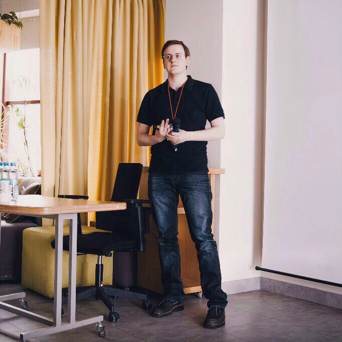
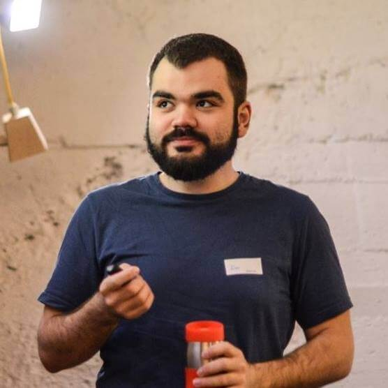
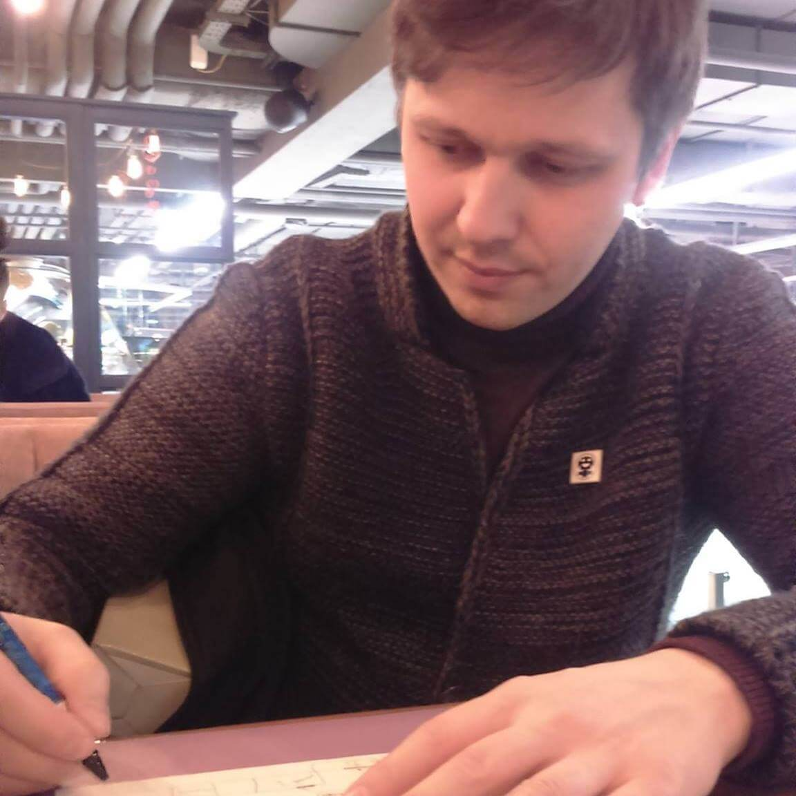
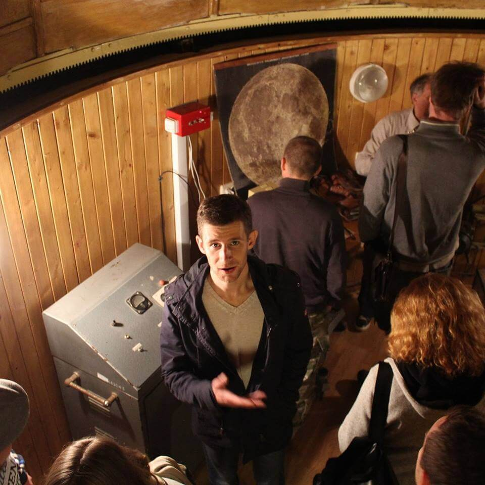

ODESSA JS 2017
Приезжайте летом на юбилейную Пятую JavaScript конференцию в Одессе
Регистрация
1-2 июля / Отель "Черное море, парк Шевченко" / Лето. Море. JavaScript.
30 июня / ул. Бунина, 1 (БЦ Негоциант), офис Lohika / препати OdessaJS
1 июля / TrueMan Hot Boat / афтепати OdessaJS
30 июня / ул. Бунина, 1 (БЦ Негоциант), офис Lohika / препати OdessaJS
1 июля / TrueMan Hot Boat / афтепати OdessaJS
Доклады
#1 Unleashing the power of GraphQL and React
GraphQL is awesome! After only a year it has got a lot of attention from the community. Many implementations have emerged and it’s just getting better. Is GraphQL right for you? Is it a query language or runtime? In this talk I am going to take you from 0 to hero. ;)
#2 Angular Testing Recipes (v4+)
In this talk, we will cover the most common testing scenarios to use while developing rock solid Angular Applications, like: Components, Services, Http and Pipes; but also some less covered areas like: Directives, the Router and Observables. We will provide examples for using TestBed, fixtures, async and fakeAsync/tick while recommending best practices.
Hasselt, Belgium
madewithlove
madewithlove
#1 Changing live audio with the web-audio API
As a guitar player, I usually use some effect-pedals to change the sound of my guitar. I started wondering: “What if, it would be possible to recreate these pedals using the web-audio-api?”. Well, it turns out, it is entirely possible to do so. This talk takes you through the basics of the web-audio-api and explains some of the audio-nodes I’ve used to change the live sound of my guitar. This presentation takes you through the basics of the web-audio-api. It explains some of the types of audio-nodes you can use to change the sound coming from an input device (eg: microphone, electric guitar, ...). As a bonus, I’ll explain how you can control a simple web-app with the web-midi-api, because, when playing the guitar, you don’t have a free hand to press a button, so we want to control it with our feet.
#2 I didn't know the browser could do that!
The times when a browser simply had to parse and show some markup are long gone. These days they are full of interesting api’s exposing various information and behaviour to web developers. This talk will walk you through a few of these api’s (speech, speech recognition, battery, location, ...), some of which you might know, some maybe not. I will show a quick example of what some of these api’s can do, and how to use them.
Winterthur, Switzerland
Nodebots
Nodebots
The rise of javascript robotics
Developers, this is your chance to dive into the World of Hardware! Javascript is already the most used Language on the Web that it makes sense to use it for Robotics as well! Ever more powerful and cheap Microprocessors (Arduino, Intel Edison, Raspberry Pi) combined with Javascript Frameworks for Robotics (cylon/johnny-five) enable to easily build even complex robots, powered by JavaScript.
Portland, Oregon — United States
Freelance web developer, consultant
Freelance web developer, consultant
#1 More Than Music: Tiny Computers, JavaScript and MIDI
Tiny computers such as the RaspberryPi, Arduino and C.H.I.P. have finally reached a level of performance and affordability that makes hardware experimentation accessible to everyone. At the same time, JavaScript has emerged as the lingua franca of web programming and can be found in many places beyond just the browser. What if I told you there was a mature protocol that's been around since 1983 and was uniquely poised to take advantage of this development?
Well, wonder no more and meet MIDI! Sitting at convergence of these two things is MIDI — a niche protocol that's been around since 1983 and was originally designed for musical instruments to communicate with one another. It's event-oriented approach to messaging feels right at home in the asynchronous world of JavaScript & Node, and the prevalence of MIDI support in older musical equipment means you can find unique, hackable and affordable hardware at your local pawnshop or Craig's List. This unlikely tech stack — Tiny Computers + JavaScript + MIDI — can lend itself to creative programming beyond music. George's Talk will explain how to get started, walk through several examples and elaborate on the future of this stack, not only as a platform for experimentation but for education as well.
Well, wonder no more and meet MIDI! Sitting at convergence of these two things is MIDI — a niche protocol that's been around since 1983 and was originally designed for musical instruments to communicate with one another. It's event-oriented approach to messaging feels right at home in the asynchronous world of JavaScript & Node, and the prevalence of MIDI support in older musical equipment means you can find unique, hackable and affordable hardware at your local pawnshop or Craig's List. This unlikely tech stack — Tiny Computers + JavaScript + MIDI — can lend itself to creative programming beyond music. George's Talk will explain how to get started, walk through several examples and elaborate on the future of this stack, not only as a platform for experimentation but for education as well.
#2 Konami-JS
An 8-year Retrospective Maintaining Frivolous OSS
Developer Program Member/ Electric Cloud
San Francisco Bay Area, USA
San Francisco Bay Area, USA
Переезд в США от а до я
Я переехал в Калифорнию почти 2 года назад и мне часто задают разные вопросы о жизни в США. Этот доклад не о том “переезжать в США или нет”, это личный выбор каждого. Я буду говорить о самом переезде и обо всем, что с этим связанно - визах, ценах, галерах, жилье и прочем.

Full Stack Developer at Provectus
Progressive Web Apps или как сделать веб-приложение ближе к нативному
В своем докладе я хочу рассказать о своем опыте внедрения поддержки offline при помощи Service Workers. А также, будет рассмотрено, что еще предлагает Chrome чтобы веб-приложение по функционалу было ближе в нативному.
CartFresh
Groupware System for fun and profit
Modern groupware systems interact with distributed sources of information require tricky approaches to keep data consistent and provide freedom on different levels of communication flow. CRDT, Operational Transformation, gossip, optimistic pub-sub is all about trade-offs. One of them has bad responsiveness in high-latency environments, another have good responsiveness but a lack of consistency. Let’s build something distributed and useful!
Sr. Software Developer at Debitoor at Ciklum
Use cases of Node.js Streams
Streams (не путати з “Node.js однопоточний”;) відносятся до тих речей, про які просто необхідно знати кожному Node.js розробнику. Розповім для чого їх створили, який їх принцип роботи, як правильно використовувати, як не правильно використовувати а також незвичні способи їх застосування. Доповідь буде цікава як і новачкам в “ноді”, так і бувалим в цій темі.
Software Engineer at Grammarly
Reactive State Management with Focal
Сейчас набирает популярность функционально реактивное программирование (FRP). Но, как мы знаем, оно не имеет ничего общего с React. Тем не менее, используя правильный стейт-менеджер, мы можем “подружить” FPR и React и сделать приложение действительно реактивным. В своем докладе я расскажу о Focal - именно таком стейт-менеджере.
Software Consultant at Hell Yeah LLC
Cross-shell prompts in JavaScript
A brief history of how I wrote a single implementation of prompt for the most popular shells (ksh/bash/zsh/fish). What benefits we can achieve with that approach.
CEO at Starbuildr
Enhancing durability of ReactJS applications with Elm components
Unlike hand-written JavaScript, Elm code does not produce runtime exceptions in practice. Instead, Elm uses type inference to detect problems during compilation, we can take advantage of this and introduce Elm components to our existing ReactJS applications to improve their production durability.

Back-end Developer at Toptal
Remote Developer Crash Start
Что такое удаленная работа? В чем плюсы такой организации процесса? Как его организовать? На эти и многие другие вопросы я отвечу во время своего доклада.

Metarhia
#1 Асинхронность с библиотекой MetaSync
Новый подход и новый синтаксис для асинхронности на JavaScript, не только без лапши колбеков, но гораздо более элегантно и быстро, чем на промисах и асинк-эвейтах. Целый набор примитивов асинхронности: асинхронная композиция, асинхронные курсоры по наборам данных в памяти, коллекторы, дроссели, очереди, обработка ошибок, сравнение производительности. Многое на функторах и чеининге, так что привычно для писать, что-то на прототипах (для скорости), совместимость с контрактом Async I/O вообще и в Node.js в частности.
#2 Эволюция архитектуры ИС
Эволюция прикладных информационных систем и перспективы развития их архитектуры. Выжимка из реального практического опыта, возможные варианты развития технологий, вызвавшие их потребности и пути решения. Базовый материал в
статье, там же иллюстрации, но в докладе расширю.
Senior Software Engineer at Debitoor
Machine Learning & JavaScript: fitting together
Speech based on what I'm doing now in Debitoor - recognition of data (like currencies, amounts, taxrates) on receipts. I will start from some DataScience basics and then continue with my practical experience - how to implement all that stuff with JavaScript.
Full Stack JS Dev
Троянская война: SinonJS
На докладе вы узнаете:
- как ликвидировать Ахиллесову пяту ваших unit test’ов;
- о достоинствах и недостатках SinonJS в рамках современной теории unit test'ирования;
- почему теория - это по-настоящему важно;
- чем отличается SinonJS от других инструментов тестирования и для чего он вообще нужен;
- какими принципами стоит руководствоваться при создании заглушек независимо от test framework'а;
- как быстро и легко начать использовать SinonJS на вашем проекте уже сейчас. Know each horse in your castle!
- как ликвидировать Ахиллесову пяту ваших unit test’ов;
- о достоинствах и недостатках SinonJS в рамках современной теории unit test'ирования;
- почему теория - это по-настоящему важно;
- чем отличается SinonJS от других инструментов тестирования и для чего он вообще нужен;
- какими принципами стоит руководствоваться при создании заглушек независимо от test framework'а;
- как быстро и легко начать использовать SinonJS на вашем проекте уже сейчас. Know each horse in your castle!
Front-end developer at K&C
Component-Driven Development: How-to guide
I'll talk about the CDD methodology and the existing problems it tries to solve. In particular, we will consider the benefits of developing the components outside of regular app and HOW-TO start doing it today in a team.
Frontend Teamlead at Wrike
Dart... жив?
Давайте начистоту. Ну кому нужен Дарт в 2017 году? Спроси любого, что стало с когда-то "убийцей JavaScript", и услышишь что-то вроде "он же это, мёртв". Да, всё так. Вернее было бы так, если бы не несколько фактов.
Ну, во-первых, мы в Wrike его используем уже два года и написали огромную кучу кода. А если где-то в промозглом Питере сидит не один десяток программистов, и, отказавшись от JS (да-да, совсем), пишет высоконагруженный сервис, которым пользуется много клиентов - наверное это что-то значит?
Во-вторых, сам Гугл категорически не согласен с такой трактовкой текущего состояния дел. Настолько не согласен, что выпускает одну новость за другой. То Flutter, то Fuchsia. А ещё взяли и переписали свой ADWords (основной продукт, зарабатывающий им деньги) на связку Dart+Angular2. Так может быть это что-то да значит?
Может показаться странным, зачем на JS конференции говорить про Dart. Однако, я берусь убедить упорных JS фанатов в том, что на Dart стоит как минимум посмотреть, а как максимум - начать его использовать в бою прямо здесь и сейчас.
Ну, во-первых, мы в Wrike его используем уже два года и написали огромную кучу кода. А если где-то в промозглом Питере сидит не один десяток программистов, и, отказавшись от JS (да-да, совсем), пишет высоконагруженный сервис, которым пользуется много клиентов - наверное это что-то значит?
Во-вторых, сам Гугл категорически не согласен с такой трактовкой текущего состояния дел. Настолько не согласен, что выпускает одну новость за другой. То Flutter, то Fuchsia. А ещё взяли и переписали свой ADWords (основной продукт, зарабатывающий им деньги) на связку Dart+Angular2. Так может быть это что-то да значит?
Может показаться странным, зачем на JS конференции говорить про Dart. Однако, я берусь убедить упорных JS фанатов в том, что на Dart стоит как минимум посмотреть, а как максимум - начать его использовать в бою прямо здесь и сейчас.

CTO at Keenethics
Как правильно думать
Мощность ПК и инструменты разработки влияют на вашу продуктивность. Однако, этот доклад будет про то, что происходит "по другую сторону монитора" - в вашем мозгу. Я постараюсь рассмотреть мышление человека как информационно-алгоритмический процесс, осветить некоторые аспекты, влияющие на работу и успех в жизни в целом.
Developer at wrike
Лайфхаки фронтенд разработчика
Мои рецепты как сделать вещи проще, быстрее и лучше. Истории из жизни и реальные примеры. Как презентовать проект удаленному заказчику, если у вас нету хостинга и домена? Как верстать пиксель в пиксель, быстро и просто? Какие чудеса таит в себе консоль?
Senior Software Engineer at Lohika
Offline first made right with Reflex
Even though you always expect a sudden loss of Internet connection, do you always deal with it right? At the end of the day, it turns out that even multi million user web apps are still unprepared for changing and saving data while offline. Many of apps that we use lack the proper conflict resolution, which is crucial to every collaborative or planning tool, web editors, forms, booking apps – you name it.
During the last two years we’ve been working on a concept called Reflex to make things better. It’s an open source methodology usable with nearly any client, database or server technology. During the talk we’ll discuss its features, consider some use cases and take a deeper look into the anatomy of offline first.
During the last two years we’ve been working on a concept called Reflex to make things better. It’s an open source methodology usable with nearly any client, database or server technology. During the talk we’ll discuss its features, consider some use cases and take a deeper look into the anatomy of offline first.
Lead Software Engineer
Нейронные сети на JS
Почему, зачем (во славу с-не, конечно) и самое главное - как сделать нейронку на JS, которая сможет распознать котиков, научится рулить машинкой или будет создавать посты для двача.
Software Engineer at DA-14
Oh my Node or Security in NodeJS
Я расскажу о тех шишках, которые набивал во время работы с NodeJS. А именно шишках и костылях, которые пришлось внедрять, ввиду возникновения вопросов безопасности.
Security Holes:
- Insecure Dependencies
- Brute Force
- DDOS
- DB Injections
Solutions:
- Tools
- Modules
- Validation methods/ways
Security Holes:
- Insecure Dependencies
- Brute Force
- DDOS
- DB Injections
Solutions:
- Tools
- Modules
- Validation methods/ways

Соучредитель The Secret Circle Solutions / Преподаватель КА ШАГ
Функциональная садо-мазо разработка на TypeScript и F# с примесью Elm
Функциональное программирование в тренде и front-end не исключение. И full stack нынче в моде. Но неправда ли практично, когда и клиент и сервер написаны на одном языке.
Только кто сказал, что это должен быть JavaScript ведь есть интересные альтернативы об одной новой из которых и поговорим.
Team Lead at Digital Hanger
Professional burnout
We will talk about professional burnout. What is it and how you can differ it from tiredness. What to do with it? What to do with it if you are a team leader and your team mate is burning out?
Open Source Developer at Metarhia, Node.js Collaborator
High-performance IPC and RPC for microservices and apps
In this talk we’ll take a look at a new open source project which provides fast and reliable IPC, RPC, remote events and data synchronization between any number of servers (Node.js) and clients (Node.js, web browsers and native Android and iOS applications) via TCP, WebSocket and Unix domain sockets. As a special bonus, we’ll talk about a tiny patch to Node core that was meant to improve IPC performance in this project but accidentally speeded up node_redis up to 10x in some scenarios.
XP Injection
Gamification in outsourcing company: experience report
Most of us used to hear word gamification only for end user engagement into product usage. Some of us know about usage of similar approaches in product development teams to improve and tune development process. But almost nobody believes that gamification is possible in the context of outsourcing companies and teams. This talk is experience report of gamification usage on very large project with detailed reusable framework demonstration. If you want to bring some fun and really engage your team, then this talk is for you.
Frontend developer at Videogorillas
Cтатически типизированный javascript
Сравнительная характеристика статически- и динамически типизированных языков программирования. Инструменты для написания статически типизированного javascript. Преимущества статически типизированного javascript.
Front-end developer at DA-14
Angular 4 Animate: завтрашние UI технологии
Во время выступления мы будем говорить о том, какой будет завтрашний день. А точнее: оптимизация и производительность анимаций, как работает Angular animation system и как стоит проверять её на гибкость. Также рассмотрим некоторые хитрые приёмы, выйдем за рамки стандартных решений, ну а вишенкой на торте станут кастомные программные анимации.
Software developer at DA-14
Deep dive into server-side rendering for Angular apps
Во время доклада я предлагаю окунуться в мир Angular, а точнее поговорить об Angular Universal. На примере одного из кейсов, мы разберём что же такое Universal и чем он может быть полезен. Обсудим потенциальные проблемы в работе с 3rd party плагинами, а также не забудем о последних новинках, а точнее об особенностях миграции на Angular 4.
Senior Front-end Developer at EAHT
Magic of Vue.js
How Vue.js magically works and why it is better than React.
JavaScript Kamikaze at EXANTE
Real world WebAssembly
I'll show how to use WebAssembly and represent some useful tools.
Frontend architect at DataArt
RxJS - Think reactively
В мире фронтенда нам приходится управлять большим количеством событий, которые могут влиять на текущее состояние приложения. В докладе, на упрощенном примере, разберемся как в этом может помочь RxJS и потоки данных. / In the world of the frontend, we have to manage a large number of events that can affect the current state of the application. Lets figure out how RxJS and data streams can help us to handle this.
Frontend developer at EVO company
Modern javascript localization with gettext
В данном докладе поговорим про проблемы локализации фронтенда и варианты их решения. Расскажу про нашу библиотеку для переводов - c-3po.js и как она может помочь вам улучшить процесс локализации.
GlobalLogic
5 production Node.js stories
Как написать NodeJS приложение, чтобы не было мучительно больно его сопровождать.
Oracle/Senior Applications Developer
Practical difficulties and approaches to its solution in node.js development
I'm going to discuss obstacles and some non-regular challenges, which could be encountered during
development with node.js, and most popular approaches to resolve them.

Senior FE developer/Department Manager
Облако в штанах
Всё чаще и чаще мы слышим о таких вещах как: микросервисы, Docker, Saas, AWS, scalability - причем не в
контексте конференций, а в рабочей повседневности и требованиях к продукту. В своем докладе я расскажу о
опыте разработки и проектирования cloud-ready front-end приложения, в частности внимание будет заострено на
последовательности принятия архитектурных решений и причин по которым приходилось их принимать.

Юрий Шевцов
Do IT/Lead Software Engineer
V8 + libuv = Node.js. Under the hood
Как устроен V8 с позиции разработчика. Что нужно прикрутить к V8, чтобы получить Node.js. Во что
превращается код на JS и прочий оверхэд. Используются ли там потоки. А также немного о нативных модулях для
Node.js
Ciklum, Software engineer
Easy ways to speed up your web application
Running web applications on mobile devices really painful. I'll show several ways how these applications
speed can be improved. All together we will apply these techniques for some Open Source web app and go
through tools which can be helpful for you in future.
Easypay / Project Manager
Agile не работает. Мы все умрем
- Встреч больше чем коддинга.
- Заказчиков больше чем разработчиков.
- Бегаем от саппорта к новым фичам.
- Прогораем по дедлайнам.
- Agile не спасает.
Больше так не делаем!
Главный лейтмотив нашей беседы – как прекратить делать то, что привыкли делать много лет подряд и начать делать продукт правильно.
- Заказчиков больше чем разработчиков.
- Бегаем от саппорта к новым фичам.
- Прогораем по дедлайнам.
- Agile не спасает.
Больше так не делаем!
Главный лейтмотив нашей беседы – как прекратить делать то, что привыкли делать много лет подряд и начать делать продукт правильно.